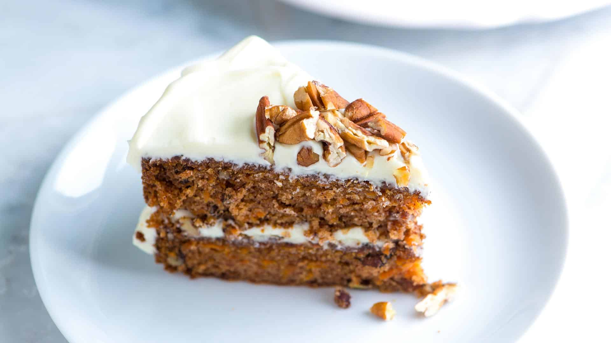

Carrot Cake Recipe

Description
This is my favorite recipe for carrot cake! It is 100% made from scratch, easy to make, versatile, and utterly delicious. One of our most popular recipes! Just read all the rave reviews!
This carrot cake is quick, easy to make, and utterly delicious. It wasn't until recently that we realized just how much we love carrot cake. It wasn't something either of us grew up eating. Thanks to this easy recipe, we fell in love. You can make this cake quickly without lots of fancy equipment. Not only is this the best-tasting carrot cake we've made, but it's a cinch to make.
Ingredients
- Flour
- Baking soda
- Salt, cinnamon, vanilla extract
- Oil
- Sugar
- Egg
- Carrot
Steps
- Dry ingredients in one bowl, wet ingredients in another: I like to whisk my dry ingredients together in one bowl until they are well blended. Then I whisk all the wet ingredients together in another bowl.
- Fold the dry and wet ingredients together: Then I switch to a rubber spatula or large spoon and fold the two — wet and dry ingredients — together until I don't see any large streaks of flour. (We use the same method when making this cinnamon coffee cake, our pineapple upside-down cake, and this buttery blueberry cake. Both recipes are so good!)
- Add carrots, nuts, and raisins: When I've got the batter ready, I fold in the carrots, and if I'm using them, the nuts and raisins.
- When it comes to baking the carrot cake, divide the batter between two buttered and floured cake pans and bake until done. The cake layers bake in the oven for 35 to 40 minutes (they smell fantastic). After baking, let the layers cool then frost with your favorite frosting.